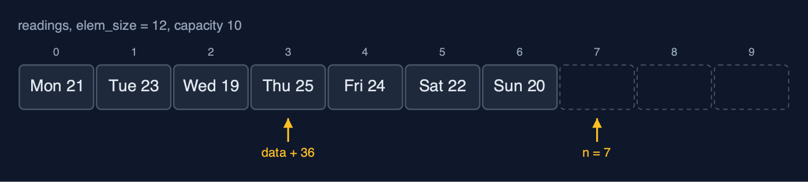

Static Array (Generic) — Cheat Sheet
A generic static array in C is a block of bytes and an element size: element i starts at data + i x elem_size, elements are copied in and out with memcpy, and comparisons are done by a function pointer, exactly as qsort and bsearch work; every cost of the static array is unchanged, and the price is that the compiler can no longer check the element type.

| What it is | A generic static array in C is a byte block with an element size: element i is at data + i x elem_size, elements move with memcpy, and comparisons go through a function pointer, as in qsort and bsearch. |
| Everyday picture | A row of equal lockers that holds whatever size of box you declare |
| Use it when | The same structure is needed for several element types, in C; The element types are plain data that can be copied with memcpy, such as numbers, structs, or pointers; You are calling qsort or bsearch and want to know what they do inside |
| Avoid it when | Only one element type is ever used: the plain static-array version is simpler and type-checked; Speed on large amounts of plain numbers matters most: a call through a function pointer for every comparison costs time; The number of elements changes: use a dynamic array (dynamic-array-generic) |
| Already in C | qsort and bsearch in <stdlib.h>, which take the same three things: a void * block, an element size and a comparison function |
Costs
| Operation | What it does | Time: best / average / worst | Extra space | In the example |
|---|---|---|---|---|
| Traverse | Print each element with a print function | O(n) / O(n) / O(n) | O(1) | 7 reads for the week |
Access get(a, i, &out) | Copy elem_size bytes from data + i x elem_size | O(1) / O(1) / O(1) | O(1) | 1 step |
Update update(a, i, &x) | Copy elem_size bytes over element i | O(1) / O(1) / O(1) | O(1) | 1 step |
Insert insert_at(a, pos, &x) | Shift elements pos..n-1 right, from the end, then copy x in | O(1) at the end / O(n) / O(n) at the front | O(1) | 5 shifts of 12 bytes to insert a reading at index 2 |
Delete delete_at(a, pos, &out) | Copy the element out, shift the later elements left | O(1) at the end / O(n) / O(n) at the front | O(1) | 7 shifts to delete index 0 of 8 |
| Linear search | Call compare(element, key) for each element in turn | O(1) / O(n) / O(n) | O(1) | 5 comparisons to find 24 |
| Binary search (sorted) | compare with the middle, discard half, repeat | O(1) / O(log n) / O(log n) | O(1) | 3 comparisons for 24, and 3 for "Thu" |
| Find maximum | compare each element with the largest so far | O(n) / O(n) / O(n) | O(1) | 6 comparisons for 7 readings |
| Reverse | Swap elements from both ends inward, byte by byte | O(n) / O(n) / O(n) | O(1) | 3 swaps of 12 bytes |
Grow copy_with_capacity | A new block; every element's bytes copied | O(n) / O(n) / O(n) | O(n) | 7 elements copied |
Compared with related structures
The generic static array against the int-only static array and the generic dynamic array (n elements):
| Property | Generic static array (void *) | Static array of int | Generic dynamic array |
|---|---|---|---|
| Element types | any, given its size | int only | any, given its size |
| Access element i | O(1): data + i x elem_size | O(1): arr[i] | O(1) |
| Insert or delete at the front | O(n) shifts of elem_size bytes | O(n) shifts | O(n) shifts |
| Comparing elements | a function pointer per comparison | == and < directly | a function pointer |
| Type checked by the compiler | no: void * | yes | no: void * |
| Size | fixed at creation | fixed at creation | grows by copying |
Watch out for
- The wrong element size: Pass
sizeofof the element type itself. - One dereference too few in a comparison of pointers: Convert to
const char *const *and dereference once:strcmp(*(const char *const *) a, *(const char *const *) b). - Returning x - y from a comparison: Return
(x > y) - (x < y). - **Comparing strings with
==**: Usestrcmp, through the comparison function.